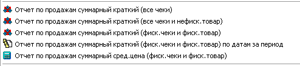
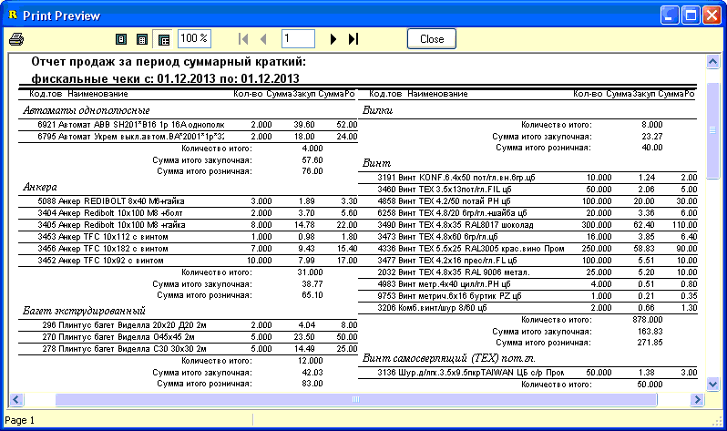
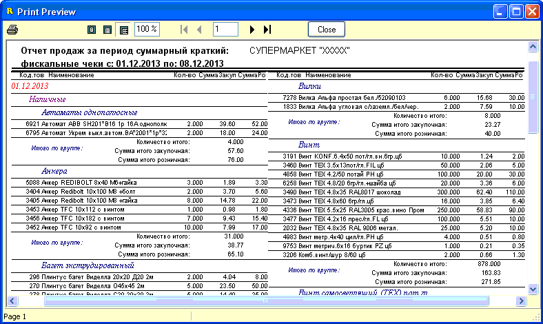

В отдельную группу выделены отчеты по чековой
реализации, которые для отбора используют признаки печати как признак
заголовка чека (статус печати "Да"-фискальный чек, "Н/ф"-нефискальный чек,
"Нет"-не печатался), так и признак индивидуально каждого проданного
в таком чеке товара (Фискальный, Нефискальный, Не печатать). Подробнее об
установке признаков смотрите в соответствующих разделах справки. Данные
отчеты используются, в основном, для получения списка товаров отправленных
и/или неотправленных на фискальный регистратор.

Дизайн всех отчетов примерно одинаковый, вывод в
2 столбца, для экономии бумаги.
1. Отчет по продажам суммарный краткий
(все чеки). Использует даты и склад, выбранные на основной форме
отчета. Группировка по товарным группам. Итоги по каждой группе и затем по
всему отчету. Признаки печати игнорируются.
2. Отчет по продажам суммарный краткий
(все чеки и нефиск.товар). Аналогичен предыдущему во всем. Признак
печати чека игнорируется, признак печати товара - "Нефискальный".
3. Отчет по продажам суммарный краткий
(фиск.чеки и фиск.товар). Аналогичен предыдущему во всем. Признак
печати чека "Да"-фискальный, признак печати товара - "Фискальный". Пример
показан на рисунке ниже:

4. Отчет по продажам суммарный краткий
(фиск.чеки и фиск.товар) по датам за период. Похож на предыдущий
отчет, однако выборка дополнительно расщепляется по признаку типа оплаты чека
(Наличные, Безналичный, Бартер), и по календарным дням входящим в
выбранный на форме временной диапазон "С даты/По дату". Признак печати чека
"Да"-фискальный, признак печати товара - "Фискальный". Пример показан на
рисунке ниже:

5. Отчет по продажам суммарный средняя
цена (фиск.чеки и фиск.товар). Похож на отчет №3, однако вместо
закупочной суммы выводится столбец усредненной розничной цены. Признак печати
чека "Да"-фискальный, признак печати товара - "Фискальный".